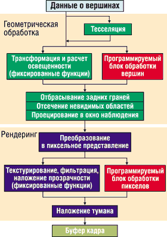
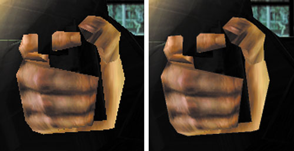
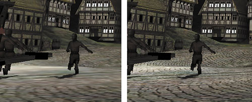

Олег Денисов, Сергей Назаров
Реалистичность изображения - вот главная цель рынка компьютерных игр на сегодня и на многие-многие годы вперед. Именно "на многие" - пройдет немало времени, прежде чем 3D-игры смогут конкурировать здесь с кино и видео. Но за последнее время прогресс в этой области настолько ощутим, что, пожалуй, уже сейчас в играх угадываются виртуальные миры будущего. Конечно, все это стало возможным только благодаря достижению качественно нового уровня 3D-графики. Причин тому было много; отметим среди них самые значимые.
Новый уровень 3D-графики
Быстродействие графических процессоров и видеопамяти
За последние три года вычислительная мощность графических процессоров (ГП) росла стремительными темпами. Так, ядро NVIDIA Riva TNT2, запущенной в производство в марте 1999 г., состояло всего лишь из 10,5 млн транзисторов, NVIDIA GeForce2 GTS (апрель 2000 г.) - 25 млн, NVIDIA GeForce3 (февраль 2001 г.) - 57 млн, а у ГП линейки NVIDIA GeForce4 Ti (февраль 2002 года) - уже 63 млн! Одновременно с этим возросла производительность видеопамяти - за счет использования DDR-памяти, увеличения ее эффективной тактовой частоты до 650 МГц и применения многоканальных контроллеров памяти (до четырех каналов).
Гибкое программное управление ГП - блоки обработки вершин и пикселов
Современные технологии формирования изображения 3D-объектов требуют от видеоподсистемы как высокой производительности, так и возможности гибко управлять ее работой. Использование блоков обработки вершин и пикселов (Vertex Shader, Pixel Shader), недавно появившихся в графических процессорах, позволяет решить сразу обе проблемы.
Формирование изображения любого трехмерного объекта начинается с тесселяции (рис. 1) - разбиения его поверхности на многоугольники, так что геометрическая форма объекта задается координатами их вершин. Но этого недостаточно для воссоздания реалистичного изображения - кроме координат вершин, нужно как минимум знать цвет вершины, направление нормали к поверхности объекта в вершинной точке для расчета отражения, цвет и координаты текстур, налагаемых на поверхность объекта в этой точке. Совокупность этих параметров дает набор данных, описывающих вершины.
|  | Рис. 1. Блок-схема конвейера графического процессора.
|
После тесселяции данные о вершинах обрабатываются блоком трансформации и расчета освещенности (T&L), который выполняет вращение, перенос, масштабирование объектов и вычисляет результирующий цвет каждой вершины. Однако блок T&L может выполнять только заранее заданный и ограниченный набор операций, который невозможно изменить программно. Поэтому для проведения нестандартных преобразований над данными о вершинах приходится использовать ЦП, что увеличивает нагрузку на него и замедляет работу видеоподсистемы и всего ПК в целом. Во избежание этого была разработана технология блоков обработки вершин (вершинных шейдеров).
По сути блок обработки вершин - это небольшой специализированный программируемый процессор, встроенный в ГП, в который можно "на ходу" загрузить микрокод, обрабатывающий данные о вершинах. Применение таких блоков дает возможность, не загружая ЦП компьютера, выполнять преобразования над вершинами и реализовать сложные видеоэффекты - например, каркасную анимацию (Skeletal Animation), процедурную деформацию (Procedural Deformation), размывание движущегося объекта (Motion Blur), рельефное DOT3-текстурирование, преломление и отражение света, наложение тумана.
После отбрасывания задних граней, отсечения невидимых областей, проецирования трехмерного изображения в окно наблюдения и преобразования полученной проекции в двухмерное пиксельное представление начинают работать конвейеры рендеринга ГП. В них встроены блоки текстурирования, фильтрации и наложения эффекта прозрачности, рассчитывающие окончательный цвет пикселов. Они выполняют фиксированный набор операций, что не позволяет ГП аппаратно проводить нестандартные операции на этапе рендеринга. Для решения этой проблемы в ГП встраивают блоки обработки пикселов (пиксельные шейдеры) - специализированные программируемые процессоры для расчета цвета пикселов. Эти блоки выполняют ту же роль, что и вершинные, но на этапе не геометрической обработки, а рендеринга, и их использование позволяет накладывать различные видеоэффекты и ускорять расчет (благодаря разгрузке ЦП) во время растеризации изображения.
Подавление артефактов - антиалиасинг и анизотропная фильтрация
Возросшая производительность современных ГП и видеопамяти позволяет на практике применять антиалиасинг (antialiasing, АА), или сглаживание, и анизотропную фильтрацию (anisotropic filtering, АФ) - технологии устранения ряда недостатков изображения в 3D-графике, которые можно использовать только на ГП с большой вычислительной мощностью.
Если сделать скриншот практически любой сцены из 3D-игры и просмотреть его с увеличением, то на границах объектов, расположенных под наклоном к горизонтали или вертикали, можно заметить зазубрины (рис. 2) - так проявляется эффект алиасинга (aliasing). Причина его в том, что при прорисовке сцены экран монитора разбивается по горизонтали и вертикали на множество мелких квадратиков (пикселов), которые закрашиваются тем или иным цветом. И если на экране нарисована линия, проходящая под углом к горизонтали или вертикали, то на ее границе видна "лесенка" из зазубрин, поскольку эта линия образуется множеством пикселов, "втиснутых" в рамки двухмерной ортогональной сетки.
|  |
| Рис. 2. Фрагмент сцены из игры Game 3 Lobby без антиалиасинга (слева) и в режиме антиалиасинга 4x (справа) на плате MSI G4Ti4600-VTD (MS-8872).
|
Для борьбы с алиасингом применяется техника антиалиасинга - ее суть сводится к сглаживанию цветовых переходов на границах объектов, но при этом сильно возрастает объем вычислений, выполняемых ГП, и объем данных, передаваемых между ГП и видеопамятью. Поэтому до недавнего времени пользователи не могли реально оценить эффект от использования антиалиасинга - вычислительной мощности графических адаптеров не хватало для обеспечения необходимой скорости генерации изображения в играх (не менее 30 кадр/с). Лишь сейчас стали появляться видеоплаты, способные обеспечить необходимую скорость работы, но даже самые мощные из них не всегда справляются с такой нагрузкой. Например, в некоторых случаях в режиме антиалиасинга 4x и 4xS скорость генерации изображения у тестировавшейся платы MSI G4Ti4600-VTD (MS-8872), построенной на базе самого мощного на сегодня ГП GeForce4 Ti 4600, опускалась ниже приемлемого уровня.
Изображения всех объектов в 3D-графике моделируются с помощью двухмерных текстур, которые накладываются на поверхность трехмерных тел и придают им реалистичную форму. При этом в зависимости от расстояния от наблюдателя до объекта на него накладываются одни и те же текстуры, но с разным разрешением. Этот прием называется MIP-текстурированием (multum in parvo, в переводе с латыни - много в одном), а варианты одной и той же текстуры с разным разрешением - MIP-уровнями. Если объект находится близко, то на него накладываются MIP-текстуры большого разрешения, если он удаляется - то меньшего.
Но если объект развертывается на экране в перспективе (например, уходящая в даль дорога, лестница, кирпичная кладка), то на его разные части будут наложены текстуры нескольких MIP-уровней, что приводит к некоторым визуальным дефектам. Во-первых, если объект находится очень близко к наблюдателю, то пикселы, образующие текстуру, заметно увеличиваются, так что поверхность тела оказывается составленной из разноцветных квадратиков с резкими границами между ними. Для ликвидации этого недостатка применяют технику билинейной фильтрации (bilinear filtering), суть которой в том, чтобы размыть границы пикселов текстуры и обеспечить плавные цветовые переходы между ними.
Во-вторых, сшивание текстур разных MIP-уровней, где одна "крупноячеистая" текстура стыкуется с такой же "мелкоячеистой" текстурой, приводит к тому, что на экране видна четко различимая граница между ними. Этот недостаток устраняется с помощью техники трилинейной фильтрации (trilinear filtering), которая основана на методе линейной интерполяции цветов пикселов двух соседних MIP-уровней, предварительно усредненных с помощью билинейной фильтрации.
В-третьих, билинейная и трилинейная фильтрация обеспечивает хорошее качество изображения для текстур, расположенных горизонтально или вертикально, но при этом изображение текстур, расположенных под острым углом, размазывается. Для борьбы с этим недостатком используется анизотропная фильтрация (anisotropic filtering).
Использование техники анизотропной фильтрации (рис. 3) - самой ресурсоемкой среди трех названных типов фильтрации - значительно увеличивает вычислительную нагрузку на ГП. Так, включение анизотропной фильтрации уровня 2x на плате MSI G4Ti4600-VTD (MS-8872) на базе ГП GeForce4 Ti 4600 при разрешении 1600x1200 приводило к снижению скорости генерации изображения в игровых тестах на 46-95%, уровня 4x - еще на 18-34%, а уровня 8x - еще на 7-20%.
|  |
| Рис. 3. Фрагмент сцены из игры Game 2 Dragothic без анизотропной фильтрации (слева) и в режиме анизотропной фильтрации 8x (справа) на плате MSI G4Ti4600-VTD (MS-8872).
|
Быстродействие ЦП - еще один способ увеличения производительности видеоподсистемы
Несмотря на то, что современные ГП при обработке трехмерной графики выполняют большую часть вычислений, производительность ПК все же зависит от мощности ЦП. Так, при замене Celeron Coppermine 950 МГц на Celeron Tualatin 1,2 ГГц интегральный показатель скорости работы с 3D-графикой 3DMark Score возрастает на 11%, при замене Pentium III Tualatin 1,13 ГГц на Pentium 4 2,0A ГГц - на 15%, в случае Duron 950 МГц и Duron 1,2 ГГц - на 9%, для Athlon 1,4 ГГц и Athlon XP 1900+ - на 6% (использованы результаты проведенного нами ранее тестирования ЦП в сочетании с видеоплатой ASUS AGP-V8200).
А вот скорость работы с двухмерной графикой зависит от быстродействия центрального процессора значительно сильнее, поскольку основная часть вычислительной нагрузки в этом случае ложится на него. Поэтому при замене Celeron Coppermine 950 МГц на Celeron Tualatin 1,2 ГГц показатель Business Graphics WinMark/High-End Graphics WinMark возрастает на 48/31%, при замене Pentium III Tualatin 1,13 ГГц на Pentium 4 2,0A ГГц - на 22/16%, для Duron 950 МГц и Duron 1,2 ГГц - на 19/27%, Athlon 1,4 ГГц и Athlon XP 1900+ - на 12/18%.
Методика тестированияПодробные описания протестированных видеоплат приведены в табл. 1. Для сравнения производительности современных видеоплат с адаптерами предыдущего поколения в программу испытаний была включена Gigabyte GA-GF2000 - типичный представитель плат на базе ГП GeForce2 GTS. Испытания проводились на двух платформах. Первая была построена на базе Intel Pentium 4 2,0 ГГц (кэш L2 512 Кбайт), системной платы ASUS P4T-E (набор микросхем Intel 850E) и 256 Мбайт памяти PC800 RDRAM, вторая - на базе AMD Athlon XP 1900+ (тактовая частота ядра - 1,6 ГГц), системной платы Soltek SL-75DRV4 (VIA Apollo KT266A) и 256 Мбайт памяти DDR266 SDRAM. Обе платформы оснащались жестким диском IBM IC35L080AVVA07 емкостью 80 Гбайт. Для измерения скорости работы видеоплат с двухмерной графикой выполнялись тесты Business Graphics WinMark и High-End Graphics WinMark из пакета ZD WinBench 99 2.0, работы с трехмерной графикой при использовании Direct3D-приложений - тесты из пакета 3DMark2001 SE - Build 300, OpenGL-приложений - деморолик из игры Serious Sam - The Second Encounter. Все тесты выполнялись под управлением ОС Windows XP Professional Build 2600. Видеоплаты на графических процессорах NVIDIA испытывались с помощью базовых драйверов, разработанных NVIDIA (http://www.nvidia.com), а все остальные - с помощью драйверов последней версии, загруженных с Web-сайта производителя платы. Все настройки драйверов оставлялись теми же, что были выставлены по умолчанию, за исключением разрешения и глубины цвета рабочего видеорежима, режима АА и АФ и отключения Vsync. Для дополнительного контроля режимов АА и АФ для плат на базе NVIDIA использовалась программа RivaTuner 2.0 Release Candidate 10.1, для модели на ГП RADEON 8500 - Anisotropy Tool (эту программу можно найти в Интернете по адресу http://www.radtweak.pwp.blueyonder.co.uk/Anisoproggy.exe), а для определения рабочих тактовых частот ГП и видеопамяти всех моделей применялась PowerStrip 3.15. Полные результаты тестирования приведены в таблицах.
|
ABIT Siluro GF3 Ti200

Черная текстолитовая основа и массивная сборка из трех серебристых радиаторов (один из них, с вентилятором, охлаждает микросхему ГП, два других - по четыре микросхемы памяти каждый), придают ABIT Siluro GF3 Ti200 весьма эффектный вид. А вот во всем остальном ее исполнение не отличается от базового дизайна NVIDIA. Комплектация ABIT Siluro GF3 Ti200 довольно скромная: англоязычное руководство пользователя, кабели S-Video - S-Video и композитный RCA - RCA, переходник-разветвитель S-Video - S-Video + RCA и DVD-проигрыватель InterVideo WinDVD.
Загруженная с Web-сайта ABIT (http://www.abit.com.tw) последняя версия драйверов этой платы была идентична устаревшим драйверам NVIDIA Detonator XP 21.83 (отличаясь от них только тем, что логотип NVIDIA везде заменен на ABIT) и обеспечивала включение режимов АА 2x, Quincunx, 4x, но не позволяла использовать АФ и программу Desktop Manager (ПО для работы с виртуальными рабочими столами, включается в комплект драйверов); последняя работала некорректно.
В то же время драйвер NVIDIA Detonator XP 28.32 обеспечивал включение АФ уровня 2x, 4x, 8x в OpenGL (в Direct3D - нет) и нормальное функционирование Desktop Manager. Поэтому для работы с ABIT Siluro GF3 Ti200 лучше использовать соответствующие драйверы NVIDIA. Отметим также, что с помощью программы тонкой настройки ("твикера") RivaTuner на этой плате удалось включить АФ уровня 2x, 4x и 8x в Direct3D и АА в режиме 4xS.
Графический процессор GeForce3 Ti 200, на котором построена ABIT Siluro GF3 Ti200, - это младший представитель линейки процессоров GeForce3 и отличается от одноименного родоначальника данного семейства только пониженными тактовыми частотами ядра и видеопамяти. По этой причине ABIT Siluro GF3 Ti200 отставала от платы ASUS AGP-V8200/Pure на базе GeForce3 в игровых тестах из пакета 3DMark2001 SE на 4-14%.
Несмотря на проигрыш в скорости работы, покупать ABIT Siluro GF3 Ti200 выгоднее, чем ASUS AGP-V8200/Pure, из-за разницы в стоимости - 155 и 210 долл. С другой стороны, при одном уровне цен модель с ГП GeForce4 MX 460 (MSI G4MX460-VT (MS-8863) - 155 долл.) по производительности и функциональности в целом уступала ABIT Siluro GF3 Ti200. Таким образом, нынешняя ситуация на рынке графических ускорителей для ПК диктует, на наш взгляд, единственное оптимальное решение при выборе между быстродействием, качеством изображения и стоимостью - это видеоплаты на основе GeForce3 Ti 200. Это и послужило основанием для награждения ABIT Siluro GF3 Ti200 знаком отличия "Выбор редакции BYTE/Россия".
AOpen GF3Ti500-DV64
По исполнению AOpen GF3Ti500-DV64 похожа на предыдущую модель: черный текстолит, алюминиевый радиатор с вентилятором на микросхеме ГП и два радиатора для охлаждения памяти (по одному на две микросхемы). Хотя, присмотревшись внимательнее, можно обнаружить некоторые различия в элементной базе и разводке этих плат. Впрочем, их внешнее сходство не случайно, так как AOpen GF3Ti500-DV64 базируется на GeForce3 Ti 500 - старшей модели линейки GeForce3, отличающейся от графических процессоров GeForce3 и GeForce3 Ti 200 только повышенными тактовыми частотами ядра и видеопамяти. Комплектность поставки этой платы богатой никак не назовешь: руководство пользователя на английском языке, драйверы и программный DVD-проигрыватель InterVideo WinDVD.
Драйверы для AOpen GF3Ti500-DV64, обнаруженные на сайте производителя (http://www.aopen.com), базировались на довольно "свежем" наборе драйверов NVIDIA Detonator XP 27.50 и по своей функциональности ни в чем не уступали последней версии базовых драйверов NVIDIA Detonator XP 28.32. Более того, в драйверах от AOpen добавилась вкладка Clock Frequencies для разгона частот процессора и памяти.
Режимы АА 2x, АФ 2x, АФ 4x, АФ 8x работали во всех тестировавшихся разрешениях, АА 4x и АА 4xS - только при разрешении 1024x768 (АФ уровня 2x, 4x, 8x в Direct3D и АА уровня 4xS включались средствами программы тонкой настройки RivaTuner).
При испытаниях AOpen GF3Ti500-DV64 на платформе Intel Pentium 4 компьютер вел себя неустойчиво - во время выполнения тестов часто случались сбои, приводившие к перезагрузке системы или к полной неработоспособности ОС. В сочетании с AMD Athlon XP подобных проблем не возникало.
Несмотря на высокую производительность, использование плат на базе ГП GeForce3 Ti 500 себя не оправдывает - причиной тому завышенные цены. Так, AOpen GF3Ti500-DV64 (350 долл.) в тестах обгоняла ASUS AGP-V8200/Pure (210 долл.) на 3-20% при разнице в стоимости более 60%! Кроме того, по цене платы на GeForce3 Ti 500 сравнимы с моделями на GeForce4 Ti 4400 (Gainward GeForce4 PowerPack! Ultra/700 XP Golden Sample - 310 долл.), уступая последним в быстродействии.
Очевидно, что при таких ценах на платы с GeForce3 Ti 500 (которые, возможно, искусственно завышаются, чтобы стимулировать продажи плат на GeForce4 Ti) смысла в покупке моделей на базе этого ГП нет. Желающим приобрести высококлассную игровую видеоплату мы бы рекомендовали обратить внимание на видеоадаптеры на базе ГП линейки GeForce4 Ti.
ASUS AGP-V8200/Pure
Появление на рынке GeForce3 в феврале 2001 г. вызвало немалый интерес у поклонников 3D-игр - это был первый ГП NVIDIA, работающий с программируемыми блоками обработки вершин. Вместе с блоками обработки пикселов, "кроссовым" контроллером видеопамяти (Crossbar Memory Controller, состоит из четырех отдельных 64-битных субконтроллеров памяти), который позволяет повысить ее производительность за счет параллельной работы с несколькими микросхемами памяти, и сжатием данных Z-буфера это обещало поднять скорость обработки трехмерной графики и реалистичность изображения на качественно новый уровень. Что ж, GeForce3 действительно удался: построенная на его основе ASUS AGP-V8200/Pure значительно обгоняла видеоплату предыдущего поколения Gigabyte GA-GF2000 на базе GeForce2 GTS - на 15-40% в 16-битном и на 30-60% в 32-битном цвете.
Позднее NVIDIA выпустила разогнанную модификацию этого ГП, GeForce3 Ti 500, и "оригинальный" GeForce3 утратил лидирующие позиции, а с появлением линейки GeForce4 Ti и вовсе перешел в разряд ГП для игровых плат среднего класса. Вообще же на сегодня положение GeForce3-плат довольно неопределенное. С одной стороны, покупатель, готовый выложить приличную сумму за ультрамодный 3D-ускоритель, предпочтет модели на базе GeForce 4 Ti. С другой - соотношение цен и производительности плат на базе GeForce3 и GeForce3 Ti 200 таково, что выгоднее сделать выбор в пользу последнего.
Отметим также, что разница в производительности ASUS AGP-V8200/Pure на платформах с Pentium 4 и Athlon XP была невелика. В большинстве тестов стенд с Pentium 4 вышел вперед с отрывом до 10%, но в ряде тестов впереди был Athlon XP с преимуществом до 4%. В целом по интегральному показателю 3DMark Score Pentium 4 незначительно опережал Athlon XP - на 1-4%.
В отличие от большинства производителей графических адаптеров на базе ГП NVIDIA, компания ASUSTeK часто сама проектирует видеоплаты, и ASUS AGP-V8200/Pure не стала исключением. Ее дизайн совершенно не похож на базовый, а среди наиболее ярких ее конструктивных особенностей - черный цвет текстолитовой основы, массивная сборка из трех ребристых радиаторов желтого цвета (один с вентилятором, оснащенным тахометром, - на микросхеме ГП; два других охлаждают микросхемы памяти - по четыре на каждый) и подсистема мониторинга состояния платы на микросхеме Winbond W83781D.
Оригинальный дизайн - не единственное достоинство платы. Высокое качество изготовления ASUS AGP-V8200/Pure подкрепляется богатой комплектацией: руководство пользователя на русском языке, руководство по быстрой установке на нескольких языках (есть раздел на русском), DVD-проигрыватель ASUSDVD 2000, игры Sacrifice, Messiah, Star Trek New Worlds, программа ASUS Tweak Utility для разгона и утилита SmartDoctor для слежения за состоянием платы.
Последняя версия драйверов ASUS AGP-V8200/Pure с Web-сайта ASUSTeK (http://www.asus.com.tw) базировалась на драйверах NVIDIA Detonator XP 21.81, отличаясь от них добавленными вкладками - со справочной информацией об адаптере и с раздельными настройками цветового баланса в Direct3D и OpenGL. В то же время эти драйверы уже устарели, не имели встроенного ПО Desktop Manager для организации виртуальных рабочих столов и не обеспечивали работу в режиме АФ (драйверы NVIDIA Detonator XP 28.32 позволяют включить на этой плате режимы АФ 2x, АФ 4x и АФ 8x, но только в OpenGL). Поэтому для корректной работы с ASUS AGP-V8200/Pure необходимы свежие базовые драйверы NVIDIA.
Отметим также, что оба набора драйверов позволяли включить АА уровня 2x (работает во всех тестировавшихся разрешениях - от 1024x768 до 1600x1200), Quincunx и 4x (в Direct3D - только при разрешении 1024x768). А с помощью программы RivaTuner удалось "заставить" эту плату работать в режиме АА 4xS, но только в Direct3D (в OpenGL этот режим АА не обеспечивается) и только при разрешении 1024x768.
Для АФ подобных ограничений не возникло. Все три уровня (2x, 4x и 8x) без проблем включились при всех разрешениях: в OpenGL - с помощью драйверов, в Direct3D - средствами RivaTuner.
ASUS V8170SE/T
Из-за схожести названий GeForce4 MX и GeForce Ti часто думают, что ядро ГП GeForce4 MX - это упрощенная версия ядра ГП GeForce4 Ti; однако это не так. К сожалению, маркетологи NVIDIA, руководствуясь рекламными соображениями, ввели в обращение термин GeForce4 MX, который плохо отражает суть и запутывает пользователей. На самом деле ГП GeForce4 MX - это значительно модифицированный GeForce2 MX с возросшими тактовыми частотами, дополненный новыми технологиями (часть их используется также в GeForce3 и GeForce4 Ti): двухканальный "кроссовый" контроллер видеопамяти, эффективное сжатие данных Z-буфера, аппаратный MPEG2-декодер, два RAMDAC, интерфейс DVI- и ТВ-выходов. В то же время GeForce4 MX уступает GeForce3 и GeForce4 Ti по производительности и функциональности, так как не работает с блоками обработки пикселов, имеет только два конвейера рендеринга (у GeForce3 и GeForce4 Ti - по четыре), два канала для обмена данными с видеопамятью (у GeForce3 и GeForce4 Ti - по четыре) и один блок T&L (у GeForce4 Ti - два).
Тестировавшаяся плата ASUS V8170SE/T построена на базе GeForce4 MX 420 - младшего процессора линейки GeForce4 MX - и, как и все платы на его основе, оснащена медленной SDR SDRAM-памятью. Конечно, она значительно отставала от модели на основе более скоростного ГП GeForce4 MX 440. Уровень "играбельности" у ASUS V8170SE/T оказался низким. К тому же ASUS V8170SE/T проигрывала плате GeForce4 MX 440 в цене - 135 долл. против 115.
Но даже с учетом традиционно высокой стоимости видеоплат ASUSTeK и более низких цен моделей на базе GeForce4 MX 420 других производителей (около 110 долл.) приобретение таких графических адаптеров, на наш взгляд, себя не оправдывает, поскольку в качестве современного ускорителя начального уровня лучше приобрести плату на базе GeForce4 MX 440, а при ограниченных финансах - недорогую модель на базе RADEON 7500LE, например, испытывавшуюся Gigabyte AR64S-H, которая при цене в 80 долл. сравнима с ASUS V8170SE/T по скорости работы.
Конструкция ASUS V8170SE/T весьма примечательна - адаптер собран на основе низкопрофильной (ширина усечена примерно на одну треть от обычного размера) текстолитовой основы зеленого цвета с игольчатым радиатором без вентилятора на микросхеме ГП, с восемью микросхемами памяти SDR SDRAM(по четыре на каждой стороне платы, маркировка - NANYA NT5SV4M16DT-6K, время выборки - 6 нс, тактовая частота - 166 МГц) без дополнительного охлаждения и с S-Video ТВ-выходом. ASUS V8170SE/T комплектуется руководством по быстрой установке на английском языке, переходником-разветвителем S-Video - S-Video + RCA-композит, играми Midnight GT, Rage Rally, AquaNox, программным DVD-проигрывателем ASUSDVD 2000, драйверами и утилитой ASUS Tweak Utility для разгона платы.
Драйверы этой платы, загруженные с Web-сайта производителя (http://www.asus.com.tw), базировались на драйверах NVIDIA Detonator XP 28.80, отличаясь от них добавленными вкладками - со справочной информацией об адаптере и с раздельными настройками цветового баланса в Direct3D и OpenGL. Отметим, что на ASUS V8170SE/T АА уровня 2x включился при всех разрешениях - от 1024x768 до 1600x1200, а уровней 4x и 4xS - только при 1024x768.
Gainward GeForce4 PowerPack! Pro/600TV Golden Sample
Плата Gainward GeForce4 PowerPack! Pro/600TV Golden Sample построена на базе ГП GeForce4 MX 440, который по производительности занимает среднее положение среди графических процессоров своей линейки, и по скорости работы немного отставала от модели на основе ГП GeForce4 MX 460. В то же время быстродействия Gainward GeForce4 PowerPack! Pro/600TV Golden Sample хватает, чтобы обеспечить достаточный уровень производительности в современных играх. Поэтому, несмотря на проигрыш в производительности, покупка видеоплаты на базе GeForce4 MX 440 предпочтительнее, чем платы на GeForce4 MX 460, из-за разницы цен - 115 и 155 долл., а также потому, что вместо платы на ГП GeForce4 MX 460 лучше приобрести модель на базе GeForce3 Ti 200, которая при одинаковом уровне цен в целом выигрывает по производительности и функциональности.
С другой стороны, Gainward GeForce4 PowerPack! Pro/600TV Golden Sample значительно опережает платы на базе ГП GeForce4 MX 420 при несущественной разнице в цене (в среднем 115 и 110 долл. соответственно) и, несомненно, будет более выгодным приобретением, чем последние. Таким образом, на сегодня модели на базе GeForce4 MX 440 будут, пожалуй, лучшим выбором в качестве игровых плат начального уровня.
Отметим также, что разница в скорости работы Gainward GeForce4 PowerPack! Pro/600TV Golden Sample на платформах с Pentium 4 и Athlon XP была незначительной - в пределах 5%.
Конструктивно Gainward GeForce4 PowerPack! Pro/600TV Golden Sample выполнена в полном соответствии с дизайном базовой платы NVIDIA и отличается от нее только малиновым цветом текстолитовой основы и необычной формой радиатора на микросхеме ГП (небольшое круглое алюминиевое основание с загнутыми по краям лепестками с вентилятором внутри), напоминающей цветок.
Драйверы этой модели, загруженные с Web-сайта производителя (http://www.gainward.com), ничем не отличались от базовых драйверов NVIDIA Detonator XP 28.32.
АА уровня 2x включился на Gainward GeForce4 PowerPack! Pro/600TV Golden Sample при всех разрешениях, а уровней 4x и 4xS - только при разрешении 1024x768.
Gainward GeForce4 PowerPack! Ultra/700 XP Golden Sample
ГП GeForce4 Ti 4400, на котором построена плата Gainward GeForce4 PowerPack! Ultra/700 XP Golden Sample, - младший представитель линейки GeForce4 Ti. По сравнению с GeForce3 в ГП этого семейства появились второй блок T&L, второй блок обработки вершин (оба работают параллельно и могут выполнять только одинаковый микрокод), возможность работы с блоками обработки пикселов версии 1.3, второй RAMDAC, интерфейс DVI- и ТВ-выходов и были улучшены алгоритмы работы "кроссового" контроллеров памяти (число каналов осталось прежним - 4) и сжатия данных Z-буфера.
По производительности GeForce4 Ti 4400 занимает промежуточное положение между GeForce3 Ti 500 и GeForce4 Ti 4600. Поэтому Gainward GeForce4 PowerPack! Ultra/700 XP Golden Sample в большинстве тестов обгоняла плату на базе GeForce3 Ti 500 (до 36%) и в целом была быстрее, хотя в некоторых случаях уступала ей - например, до 28% при включении АФ, а кроме того стоила меньше (поскольку цены на платы с ГП GeForce3 Ti 500 искусственно завышены) - 310 долл. против 350. Таким образом, покупка платы на базе GeForce4 Ti 4400 предпочтительнее, чем на базе GeForce3 Ti 500. Отставание этой модели от плат на базе GeForce4 Ti 4600 было довольно заметным - в пределах 20%, однако последние довольно дороги - около 400 долл., так что с точки зрения соотношения цены и качества приобретение модели на базе GeForce4 Ti 4400 более выгодно. Таким образом, на сегодня адаптеры на основе ГП GeForce4 Ti 4400, по нашему мнению, будут оптимальным выбором в качестве мощной игровой платы.
Дизайн Gainward GeForce4 PowerPack! Ultra/700 XP Golden Sample выполнен в полном соответствии с базовым и, пожалуй, отличается от него только малиновым цветом текстолитовой основы и дополнительным охлаждением микросхем видеопамяти (их восемь, по четыре на каждой стороне платы) с помощью небольших ребристых радиаторов.
В комплект поставки этой платы включены руководство по быстрой установке на английском языке, универсальный видеокабель-разветвитель S-Video - 2 x S-Video + 2 x RCA-композит, переходник DVI - D-Sub, наклейка с логотипом Gainward, игра Serious Sam - The First Encounter, программы InterVideo WinProducer и InterVideo WinCoder, DVD-плеер InterVideo WinDVD, фирменная утилита EXPERTool от Gainward для разгона платы.
Драйверы последней версии к Gainward GeForce4 PowerPack! Ultra/700 XP Golden Sample, выпущенные ее производителем (http://www.gainward.com), ничем не отличались от базовых драйверов NVIDIA Detonator XP 28.32. АА и АФ всех уровней включались на Gainward GeForce4 PowerPack! Ultra/700 XP Golden Sample при всех тестировавшихся разрешениях - от 1024x768 до 1600x1200.
Gainward GeForce4 PowerPack! Ultra/750 XP Golden Sample
В тестах на скорость работы Gainward GeForce4 PowerPack! Ultra/750 XP Golden Sample, оснащенная ГП GeForce4 Ti 4600, показала превосходные результаты и вместе с MSI G4Ti4600-VTD (MS-8872), построенной на том же графическом процессоре, вышла в лидеры, заметно обогнав ближайшего соперника на базе ГП GeForce4 Ti 4400 - с преимуществом до 20%. Однако дизайн и комплектность поставки у модели Gainward, на наш взгляд, продуманы лучше, чем у MSI, поэтому Gainward GeForce4 PowerPack! Ultra/750 XP Golden Sample была признана победителем испытаний и удостоена знака отличия "Выбор редакции BYTE/Россия".
Конструкция Gainward GeForce4 PowerPack! Ultra/750 XP Golden Sample отличается от базового дизайна NVIDIA наличием второго DVI-выхода (выхода D-Sub на этой плате нет), радиаторов на микросхемах памяти (всего их восемь - по четыре на каждой стороне платы) и малиновым цветом текстолитовой основы.
Эта плата примечательна и тем, что к ней прилагается трехпортовый адаптер IEEE-1394, что позволяет сразу же превратить ПК в недорогую рабочую станцию для цифрового видеомонтажа! Помимо этого вместе с платой поставляются два переходника DVI - D-Sub, универсальный видеокабель-разветвитель S-Video - 2 x S-Video + 2 x RCA-композит, руководство по быстрой установке, программы InterVideo WinProducer и InterVideo WinCoder, DVD-проигрыватель InterVideo WinDVD, игра Serious Sam - The First Encounter и фирменная утилита EXPERTool от Gainward для разгона платы.
Драйверы Gainward GeForce4 PowerPack! Ultra/750 XP Golden Sample, загруженные с Web-сайта ее производителя (http://www.gainward.com), ничем не отличались от базовых драйверов NVIDIA Detonator XP 28.32 и обеспечивали стандартную функциональность. АА и АФ всех уровней включались при всех тестировавшихся разрешениях - от 1024x768 до 1600x1200.
Gigabyte AR64S-H
Отлично продуманный дизайн платы Gigabyte AR64S-H, построенной на ГП RADEON 7500LE, очень сильно отличается от базового, предложенного компанией ATI (http://www.ati.com). Среди оригинальных конструктивных особенностей этой модели - цельнометаллический алюминиевый радиатор серебристого цвета внушительных размеров с вентилятором со встроенным тахометром, охлаждающий микросхемы ГП и памяти (размещены в два ряда по четыре штуки на лицевой стороне платы), подсистема мониторинга состояния на микросхеме Winbond W83L785R (позволяет следить за напряжениями на плате и температурой ГП и контролировать скорость вращения вентилятора) и малиновый цвет текстолитовой основы. Плата также оснащена DVI-выходом и S-Video ТВ-выходом.
Комплектуется Gigabyte AR64S-H видеокабелем-разветвителем S-Video - S-Video + RCA-композит, руководством пользователя на английском языке, фирменной утилитой V-Tuner от Gigabyte (используется для разгона ГП и видеопамяти, слежения за напряжениями питания V3.3, VCORE, VDD и температурой ГП и для управления скоростью вращения вентилятора), играми Serious Sam - The First Encounter, Heavy Metal - FAKK2, Motocross Mania, Rune и DVD-проигрывателем CyberLink PowerDVD XP.
Драйверы последней версии для Gigabyte AR64S-H от ее производителя (http://www.gigabyte.com.tw) были аналогичны базовым драйверам ATI и обеспечивали вывод изображения одновременно на два устройства (монитор + монитор или монитор + ТВ) с развертыванием рабочего стола на оба приемника. В OpenGL включалась АФ уровней 8x (в драйверах этот уровень назван High quality) и 16x (Highest quality), но все попытки включить на этой плате АФ в Direct3D закончились безрезультатно. Как в Direct3D, так и в OpenGL включался АА уровней 2x (при разрешениях 1024x768 и 1280x1024) и 4x (только при разрешении 1024x768).
Gigabyte AR64S-H оснащается медленной SDR SDRAM-памятью, что сразу же позволяет отнести ее лишь к платам начального уровня. По производительности она, конечно же, заметно проигрывает моделям среднего класса - например, на базе ГП GeForce3 Ti 200. А вот среди маломощных плат у Gigabyte AR64S-H есть собственная ниша.
Несмотря на то, что по скорости работы эта модель сильно уступает платам на базе ГП GeForce4 MX 440 стоимостью около 115 долл.: в стандартном режиме (без АА и АФ) до 70%, при включении АА - более чем в 2 раза (!) и заметно проигрывает адаптерам на основе ГП GeForce4 MX 420 со средней ценой 110 долл.: до 20%, цена ее очень привлекательна - всего лишь 80 долл.! Кроме того, в целом по функциональности и скорости работы Gigabyte AR64S-H превосходила плату с таким же уровнем цен на ГП KYRO II (80 долл.) и более дорогую модель на ГП G550 (110 долл.). Учитывая также надежную конструкцию платы, возможность подключения двух мониторов и ТВ-приемника и хорошее качество изображения во время выполнения игровых тестов, можно сделать вывод, что среди испытанных плат Gigabyte AR64S-H будет лучшим выбором в качестве недорогого графического адаптера для бюджетного ПК.
При этом, правда, нужно помнить, что Gigabyte AR64S-H позволяет комфортно играть в современные игры при разрешении не выше 1024x768 и уровне АА не выше 2x - при больших разрешениях и уровне АА 4x скорость генерации изображения падает ниже приемлемого уровня (30 кадр/с).
Что же касается скорости работы Gigabyte AR64S-H на платформах с Pentium 4 и Athlon XP, то проведенные тесты не выявили какого-либо заметного отличия между ними - разница в показателях не превышала 1-2%.
Hercules 3D Prophet 4500 TV/Out
Модель Hercules 3D Prophet 4500 TV/Out (http://www.hercules.com), построенная на базе ГП KYRO II, - типичный представитель недорогих графических адаптеров начального уровня. Характерная особенность этой платы - невозможность работы в режиме AGP 4x (только AGP 1x или 2x). Комплектуется Hercules 3D Prophet 4500 TV/Out весьма скромно: переходник S-Video - RCA-композит, руководство пользователя на английском языке, драйверы и программный DVD-проигрыватель CyberLink PowerDVD.
Возможности драйверов этой платы достаточно стандартны. Отметим лишь, что с их помощью можно управлять тактовой частотой ГП (частота видеопамяти синхронизирована с ней) и включать АА (доступны уровни Force 4x (2x2) Anti-aliasing, Force 2x Horizontal Anti-aliasing, Force 2x Vertical Anti-aliasing) и АФ (Force Anisotropic Filtering) - обе функции включаются как в Direct3D, так и в OpenGL. АФ на Hercules 3D Prophet 4500 TV/Out включилась при всех разрешениях вплоть до 1600x1200, а АА уровня 4x - только при разрешениях 1024x768 и 1280x1024.
Ближайший конкурент Hercules 3D Prophet 4500 TV/Out из числа испытанных плат - Gigabyte AR64S-H, продемонстрировавшая примерно такой же уровень быстродействия при одинаковой цене - 80 долл. В отдельных игровых тестах борьба между этими моделями шла с переменным успехом. По интегральному показателю 3DMark Score впереди была Gigabyte AR64S-H за одним-единственным исключением - при разрешении 1600x1200 при глубине цвета 32 бит лидировала Hercules 3D Prophet 4500 TV/Out. Отметим также, что в целом Hercules 3D Prophet 4500 TV/Out работала быстрее на платформе с ЦП Pentium 4 с преимуществом в отдельных игровых тестах до 14%, хотя иногда стенд с Athlon XP работал быстрее - до 5%.
Таким образом, испытания на скорость работы не выявили лидера из этих двух моделей, однако при выполнении игровых тестов Hercules 3D Prophet 4500 TV/Out некорректно прорисовывала некоторые сцены - скорее всего, из-за недостаточно отлаженных драйверов этой платы. Поэтому покупка Gigabyte AR64S-H будет предпочтительнее.
Matrox Millennium G550
Адаптер Matrox Millennium G550 (http://www.matrox.com) базируется на ГП G550 и выполнен в виде низкопрофильной платы (ее ширина усечена примерно на одну треть от обычного размера), смонтированной на текстолитовой основе зеленого цвета, с двумя выходами для подключения мониторов (D-Sub и DVI), игольчатым радиатором без вентилятора на микросхеме ГП и двумя микросхемами памяти на лицевой стороне платы. Разъем D-Sub на Matrox Millennium G550 выводится наружу с помощью небольшой дочерней платы, что, вообще говоря, нельзя считать удачным инженерным решением, так как оно приводит к ухудшению качества изображения на этом выходе. Комплектуется эта плата переходником DVI - D-Sub для подключения второго аналогового монитора и диском с драйверами и вспомогательным ПО, из которого отметим программу Matrox PowerDesk (обеспечивает быстрый доступ к настройкам драйверов и позволяет создавать виртуальные рабочие столы).
Драйверы Matrox Millennium G550 имеют ряд оригинальных функций, среди которых гибкая настройка цветопередачи (гамма-коррекция отдельно по каждому или сразу по всем трем RGB-каналам, установка цветовой температуры) и видеорежима (установка Horizontal/Vertical Refresh Rate с шагом в один кГц/Гц, Horizontal/Vertical Front porch - восемь пикселов/одна линия, Horizontal/Vertical Sync - восемь пикселов/одна линия, Horizontal/Vertical Back porch - восемь пикселов/одна линия), вывод изображения одновременно на два монитора (режим DualHead Multi-Display - развертывание рабочего стола на два монитора, DualHead Clone - дублирование изображения на втором мониторе, DualHead Zoom - отображение на всем экране второго монитора части рабочего стола, DualHead DVDMax - проигрывание видеоролика в окне приложения на первом мониторе и отображение его в полноэкранном режиме на втором мониторе). А вот работу в режимах АА и АФ драйверы этой платы не обеспечивают.
Производительность Matrox Millennium G550 в игровых тестах была настолько низкой, что вряд ли эту плату можно считать 3D-ускорителем - запускать на ней современные игры вообще не представляется возможным. В то же время Matrox Millennium G550 можно с успехом использовать для выполнения дизайнерских работ с двухмерной графикой, и приобретение этой недорогой (в среднем - 110 долл.) "двухголовой" платы в таком качестве будет, на наш взгляд, оптимальным решением.
MSI G4MX460-VT (MS-8863)
Сравнение производительности и цены MSI G4MX460-VT (MS-8863) с ближайшими конкурентами лишний раз подтверждает, что у плат на базе ГП GeForce4 MX 460 довольно сложное положение на рынке. С одной стороны, эта модель значительно дороже, чем плата на GeForce4 MX 440 (соответственно 155 и 115 долл.), при том, что последняя не слишком отставала в тестах и обеспечивает необходимую скорость работы в современных играх вплоть до разрешения 1280x1024. С другой стороны, при одном уровне цен по производительности и функциональности MSI G4MX460-VT (MS-8863) в целом проигрывала плате на ГП GeForce3 Ti 200. Так что позиционирование плат на базе GeForce4 MX 460 пока четко не определено. Возможно, что со временем ситуация изменится благодаря снижению цен на эти модели или прекращению продаж адаптеров на основе ГП GeForce3 Ti 200.
Комплектуется MSI G4MX460-VT (MS-8863) руководством пользователя на английском языке, видеокабелем S-Video - S-Video, переходником S-Video - RCA-композит, программой InterVideo WinProducer/Coder, DVD-проигрывателем MSI MSIDVD, играми Sacrifice, No One Lives Forever, AquaNox, программой MSI 3D!Turbo Experience (для разгона платы) и антивирусом Trend PC-cillin 2000.
Драйверы MSI G4MX460-VT (MS-8863), загруженные с Web-сайта ее производителя (http://www.msi.com.tw), были построены на базовых драйверах NVIDIA Detonator XP 27.50 и отличались от них только двумя добавленными вкладками - со справочной информацией о видеоплате и с настройками для ее разгона.
АА уровня 2x включился на этой плате во всех разрешениях как в Direct3D, так и в OpenGL; АА уровня 4x - в Direct3D только при разрешении 1024x768, в OpenGL - при 1024x768 и 1280x1024; уровня 4xS - только в Direct3D, как и следовало ожидать, и только при 1024x768. АФ уровня 2x включилась при всех разрешениях в Direct3D и в OpenGL.
Отметим также, что в подавляющем большинстве тестов платформа с Athlon XP немного опережала компьютер с Pentium 4 - на 1-12%.
MSI G4Ti4600-VTD (MS-8872)
Оснащенная самым быстрым на сегодня ГП GeForce4 Ti 4600, плата MSI G4Ti4600-VTD (MS-8872) продемонстрировала отличную производительность и вместе с Gainward GeForce4 PowerPack! Ultra/750 XP Golden Sample вышла в лидеры тестирования. Лучший дизайн и комплектация модели от Gainward помешали MSI G4Ti4600-VTD (MS-8872) стать победителем, но в ее пользу говорит меньшая цена - 395 долл. против 420, и покупка этой платы позволит сэкономить средства, если вам нужен один из самых быстрых графических адаптеров, доступных сегодня на массовом рынке.
Единственное отличие дизайна MSI G4Ti4600-VTD (MS-8872) от базового, разработанного NVIDIA для плат на ГП GeForce4 Ti 4600, - прозрачный пластиковый корпус, защищающий вентилятор на микросхеме ГП. В остальном конструкция этой платы совершенно стандартна.
Комплектуется MSI G4Ti4600-VTD (MS-8872) руководством пользователя на английском языке, видеокабелем S-Video - S-Video, переходником-разветвителем S-Video - 2 x S-Video + 2 x RCA-композит, программой InterVideo WinProducer/Coder, DVD-проигрывателем MSI MSIDVD, играми Sacrifice, No One Lives Forever, AquaNox, программой MSI 3D!Turbo Experience (для разгона платы) и антивирусом Trend PC-cillin 2000.
Драйверы последней версии для MSI G4Ti4600-VTD (MS-8872) от ее производителя (http://www.msi.com.tw) были изготовлены на основе базовых драйверов NVIDIA Detonator XP 27.50 и отличались от последних только двумя добавленными вкладками (со справочной информацией о видеоплате и с настройками для ее разгона). АА и АФ всех уровней включались во всех тестировавшихся разрешениях - от 1024x768 до 1600x1200.
PowerColor AR2TD-B3 (Radeon 8500 Evil Master II 275 MHz Pro Edition)
Плата PowerColor AR2TD-B3 базируется на RADEON 8500 - самом современном графическом процессоре ATI, в числе основных новшеств которого - аппаратная реализация новой технологии разбиения гладких поверхностей на треугольники с помощью N-патчей (известна под маркетинговым названием Truform), технологии адаптивного сглаживания (Adaptive Antialiasing) и улучшенной технологии сжатия данных Z-буфера (HyperZ II), наличие блоков обработки вершин и пикселов, встроенного интерфейса ТВ-выхода и возможность использования второго внешнего ЦАП для подключения аналогового монитора и второго внешнего TDMS-контроллера для подключения монитора с DVI-интерфейсом.
Конструкция PowerColor AR2TD-B3 абсолютно идентична базовому дизайну этой платы, разработанному ATI (даже на вентиляторе, охлаждающем микросхему ГП, размещена наклейка с логотипом ATI), и только по наклейке на ее обратной стороне можно определить, что этот адаптер выпускается компанией PowerColor. Плата оснащена DVI-выходом, S-Video ТВ-выходом, микросхемой ATI Rage Theatre (используется для кодирования/декодирования видеосигнала), восемью микросхемами памяти без дополнительного охлаждения (по четыре на каждой стороне платы, маркировка - Hynix HY5DV641622AT-36, время выборки - 3,6 нс, тактовая частота - примерно 277 (554) МГц). Смонтирована она на текстолитовой основе зеленого цвета.
Комплектуется данная модель видеокабелями S-Video - S-Video и RCA-композит - RCA-композит, переходниками S-Video - RCA-композит и DVI - D-Sub (для подключения аналогового монитора к DVI-выходу), руководством пользователя на английском языке, игрой Rune, программным DVD-проигрывателем CyberLink PowerDVD, драйверами, ПО HydraVision для организации работы с несколькими рабочими столами и набором фирменных программ ATI Multimedia Center (в него входит ПО для проигрывания DVD-, Video CD-, Audio CD-дисков и мультимедийных файлов).
Производительность PowerColor AR2TD-B3 в стандартном режиме (без АА и АФ) была сопоставима со скоростью работы платы на базе ГП GeForce3 Ti 500 при более чем двукратном выигрыше в цене - 155 и 350 долл., однако при включении АА PowerColor AR2TD-B3 начинала сильно отставать с разрывом до 35%. Если же сравнивать ее с моделью на базе ГП GeForce3 Ti 200, которая стоит примерно столько же - 155 долл., то PowerColor AR2TD-B3 значительно обгоняла ее в стандартном режиме с преимуществом до 50%, но при включении АА проигрывала до 20%.
Таким образом, на сегодня платы на базе ГП RADEON 8500 можно отнести к графическим 3D-ускорителям среднего класса, покупка которых в таком качестве весьма выгодна благодаря привлекательной цене. Отметим, однако, что качество изображения при выполнении игровых тестов у PowerColor AR2TD-B3 было на хорошем уровне, но все же хуже, чем у плат на ГП производства NVIDIA.
Драйверы PowerColor AR2TD-B3, загруженные с Web-сайта ее производителя (http://www.powercolor.com.tw), ничем не отличались от базовых драйверов ATI, и позволяли выводить изображение одновременно на два устройства (монитор + монитор или монитор + ТВ) и развертывать рабочий стол на оба приемника, включать в OpenGL АФ уровня 8x (в драйверах этот уровень назван High quality) и 16x (Highest quality) (в Direct3D АФ включалась с помощью программы тонкой настройки Anisotropy Tool). В Direct3D и OpenGL включался АА уровня 2x, 3x, 4x, 5x, 6x (при этом нужно еще выбрать режим оптимизации - Quality или Performance). Отметим, что при выборе режима АА в драйверах PowerColor AR2TD-B3 сразу же указывается, до какого разрешения он будет работать, что очень удобно и не вводит пользователя в заблуждение - в драйверах к платам на ГП NVIDIA этого нет, и неясно, включится ли установленный режим АА при данном разрешении. Например, 2x Performance работает до разрешения 1600x1200, 2x Quality - до 1280x1024, 4x Performance - до 1280x1024, 4x Quality - до 1024x768 точек.
Во время испытаний АА уровня 2x Quality включился при разрешениях до 1280x1024, 4x Quality - только при разрешении 1024x768 (т. е. в полном соответствии с тем, что декларируется в настройках драйверов платы), а АА уровней 8x и 16x - при всех разрешениях вплоть до 1600x1200.
Отметим также, что на платформе с ЦП Pentium 4 эта плата работала немного быстрее, чем на стенде с Athlon XP, с преимуществом в отдельных игровых тестах до 9%.
Выбор редакции
Бесспорным победителем испытаний стала плата Gainward GeForce4 PowerPack! Ultra/750 XP Golden Sample на базе ГП GeForce4 Ti 4600, в числе достоинств которой не только высокая производительность и прекрасное качество изображения при работе с современными играми, но и гарантированный разгон по тактовым частотам ГП и видеопамяти и отличная комплектация, что позволяет построить на основе этой модели недорогую рабочую станцию для цифрового видеомонтажа.
Производительность современных графических процессоров и уровень цен на видеоплаты на их базе таковы, что на сегодня наиболее удачным компромиссом между быстродействием, качеством изображения и стоимостью будут модели на основе ГП GeForce3 Ti 200. Платы этого типа были представлены адаптером ABIT Siluro GF3 Ti200, который безупречно справился со своей ролью.
Благодарности
Авторы статьи выражают особую признательность фирме "Пирит" (тел. (095) 115-7101, http://www.pirit.ru) за оборудование, предоставленное для проведения тестирования, и российскому представительству Microsoft Corp. (http://www.microsoft.com/rus), предоставившему ОС Windows XP Professional.
Видеоплаты для подготовки этого обзора были предоставлены компаниями "Атлантик Компьютерс" (http://www.atlantic.ru), "Инлайн" (http://www.i2b.ru), "Формоза" (http://www.formoza.ru), ABIT (http://www.abit.com.tw), AOpen (http://www.aopen.ru), ELKO Moscow (http://www.elko.ru), Gigabyte (http://www.gigabyte.com.tw), Lizard (http://www.lizard.ru). Процессор Pentium 4 2,0 ГГц (кэш L2 512 Кбайт) предоставила компания ELKO Moscow.